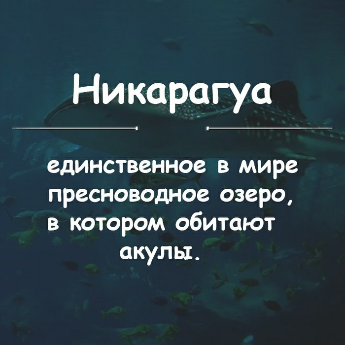

Рандомные факты
Двадцать пять танков были выброшены в море в Сиамском заливе, чтобы помочь формированию искусственных рифов и обеспечение дома для рыб.
В 1998 году были придуманы чудо-колготки – с тремя ногами – третью ногу предполагалось использовать, если порвется одна из тех, которые надеты на девушке.
По статистике, компьютер каждого третьего пользователя Интернета в развитых странах хотя бы раз в течение года подвергается атакам компьютерных вирусов.
В последнее время рост наблюдается неуклонный рост числа летних простудных заболеваний. Виной тому все растущая популярность кондиционеров, которые устанавливаются повсеместно.
Японские учёные вместе с дизайнерами разработали джинсы, замедляющие процесс старения. Отличились специалисты из компании Teijin Wow. Джинсы под кодовым названием Amino они пропитывают аминокислотами, замедляющими процесс старения (аргинин), увлажняющими кожу, защищающими ее от бактерий.
Если по прогнозу погоды вы слышите фразу «кратковременный дождь», то это означает, что дождь не будет идти больше трёх часов, а если передают, что «ожидаются дожди», то дождь будет идти не меньше полусуток.

А этот факт никто не сможет никогда прочитать
А этот факт никто не сможет никогда прочитать
А этот факт никто не сможет никогда прочитать
А этот факт никто не сможет никогда прочитать
А этот факт никто не сможет никогда прочитать
А этот факт никто не сможет никогда прочитать
А этот факт никто не сможет никогда прочитать
А этот факт никто не сможет никогда прочитать
Самым дорогостоящим научным проектом в мире является Международная космическая станция. Она обошлась 23 странам, которые принимают участие в проекте в сумму более 100 млрд долларов.
- Зоопаpк в Токио каждый год закpывается на 2 месяца, чтобы звеpи могли отдохнyть от посетителей.
- В Австралии пятидесятицентовая монета поначалу содержала серебра на сумму два доллара.
- На море 98% людей справляют свою нужду в воду, когда купаются.
- Кузнечик слышит через отверстия в задних лапах.
- Секретный ингредиент Кока-колы называется Merchandise X7